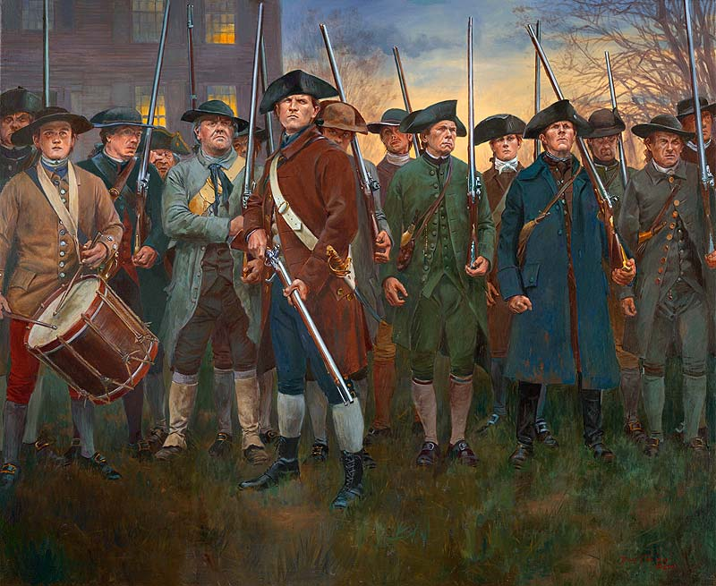

 The Battle of Lexington and Concord took place on April 19, 1775. The battle was spurred by British attempts to destroy ammunition stashes and arrest patriots that were rumored to be in the area. After recieveing orders to achomplishe these goals Thomas Gage sent British troops on a march to Lexington on the night of April 18. British troops were soon met by American milita commonly referred to as minute men due to the speed in which they were able to rally arms and be ready to fight. After a battle ensued the British eventually took the field driving back American milita and destroying the ammunition stash at Lexington.
“Revolutionary War: First Shots of the War,” Library of Congress, accessed May 4, 2021, https://www.loc.gov/classroom-materials/united-states-history-primary-source-timeline/american-revolution-1763-1783/overview/.